Learn More


We worked with CamelBak Products, LLC to expand their product line with a focus on catering to outdoor hydration and carrying needs. The sponsor was looking to expand their target market to include millennial families.
The observed outcome of this project was be a product that simplified the process for getting outdoors as a family to go day hiking. The proposed product will be an essential tool used by families when considering any outdoor activities. There is no existing product for this identified market, therefore there is a lot of opportunity. With the findings presented in a report to the sponsor, the outdoor goods company will be able to expand their lines and reach a new audience, ultimately shaping the outdoor experience for families.
Process:
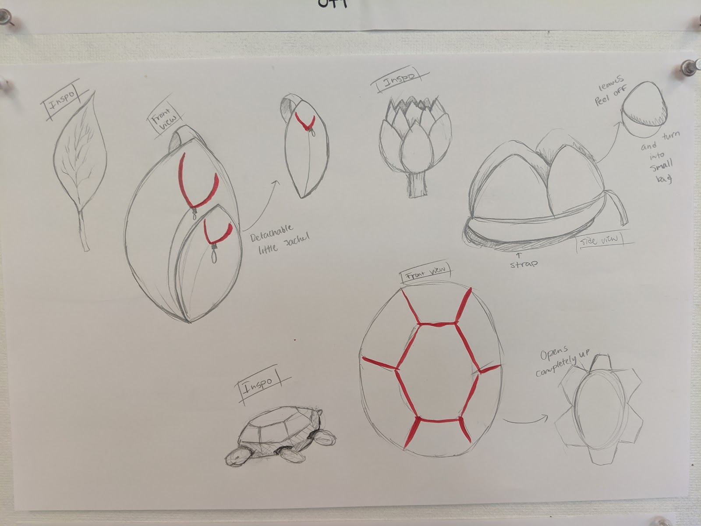
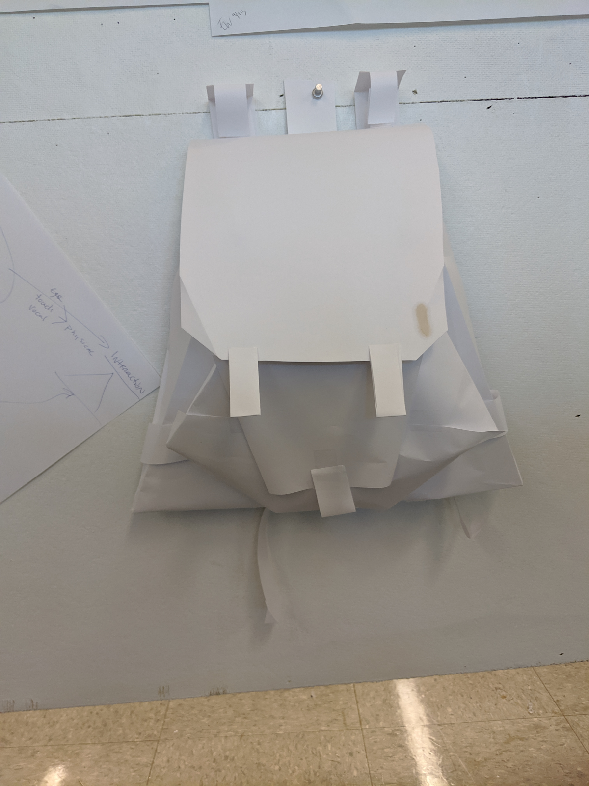
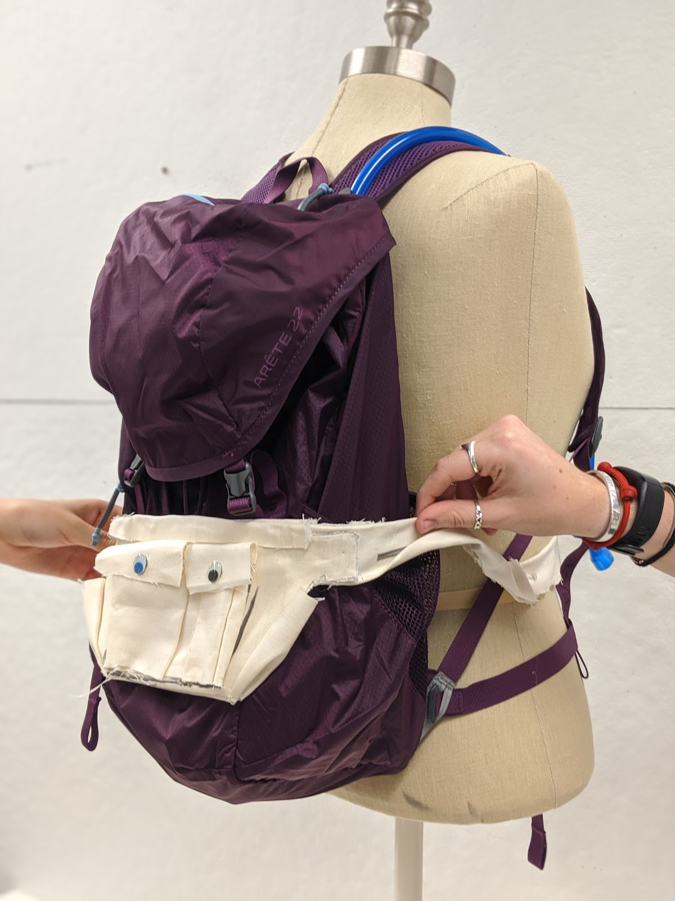
As a group we decided to come up with bioinspired designs and unique shapes. Our first design iteration consisted of 16 sketches, of which we picked 4 of to make physical paper prototypes of with detailed sketches. After conducting surverys on functionality and design preferences, a cloth prototype was made in order to test the product further from which a final design was derived.
Final Product:
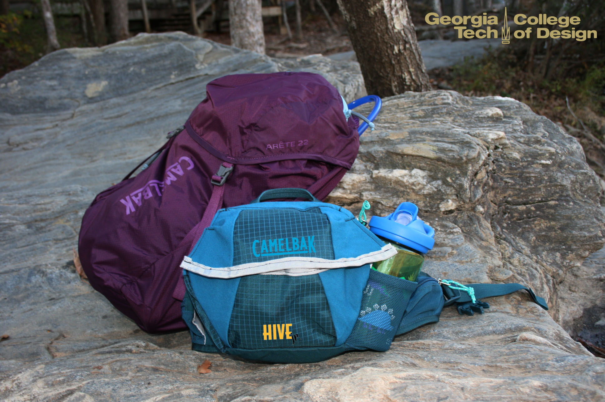
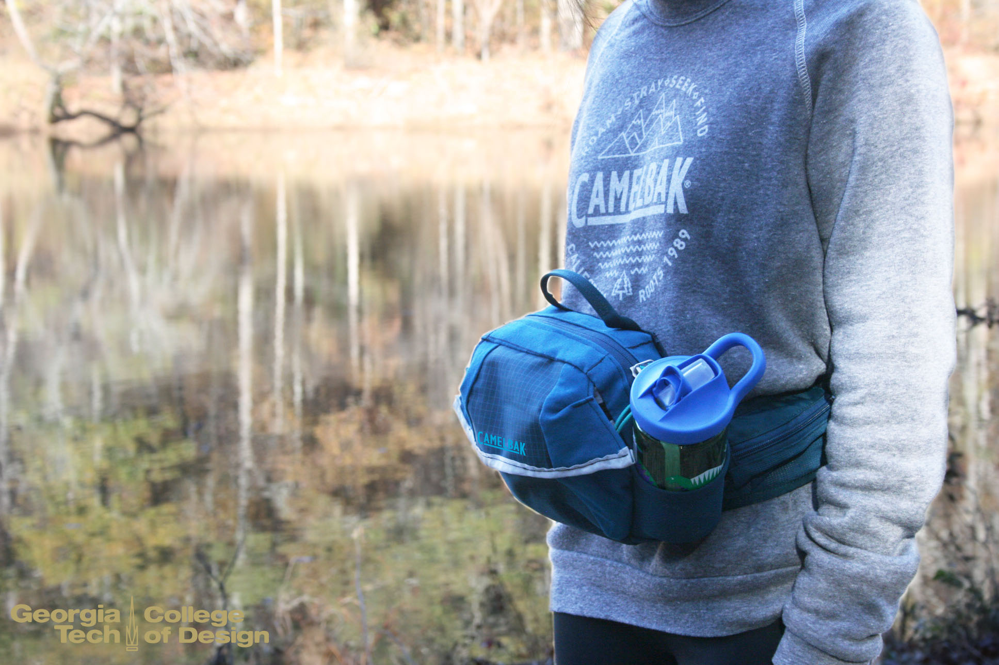
The purpose of this project is to use an Epson robot with an end-effector to release pancake batter into desired shapes. The first objective was to program the Epson to draw a pre-chosen set of shapes. This was accomplished by selecting images and using Inkscape to create svg files to feed vector coordinates for the robot to follow. Once this was successful, a system was designed to release batter, which was dependent on the orientation of the Epson. Finally, image processing was used to get coordinates from images so that the Epson was capable of making virtually any shape with no limitations.
My contributions included laser cutting the end effector, writing the script that imported svg files and converted them into plottable points on MATLAB, and creating the images that were to be imported on InkScape. The final product is seen in the video.
This project taught the fundamental procedures for solving engineering design problems; the essential details of analyzing, synthesizing, and implementing design solutions with flexibility, adaptability, and creativity; the techniques which allow an engineer to tackle new, unsolved, open-ended problems.
Design Concepts were created based on the engineering and customer requirements for this mission to mars.
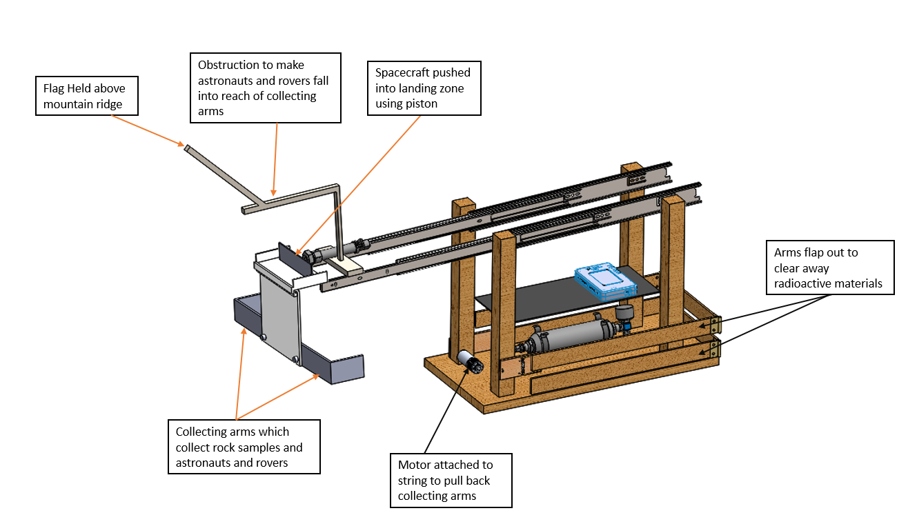
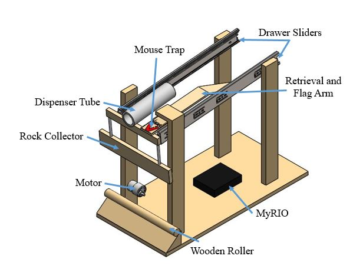
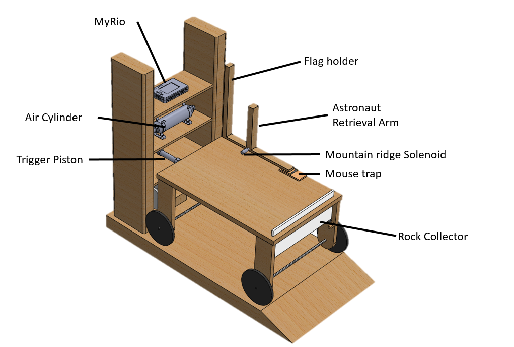
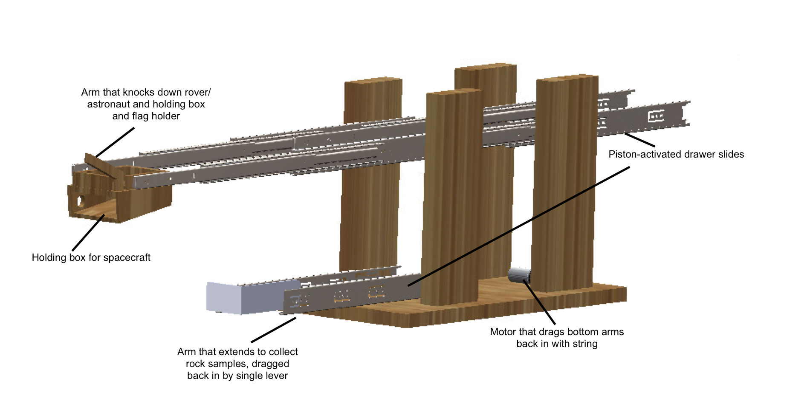
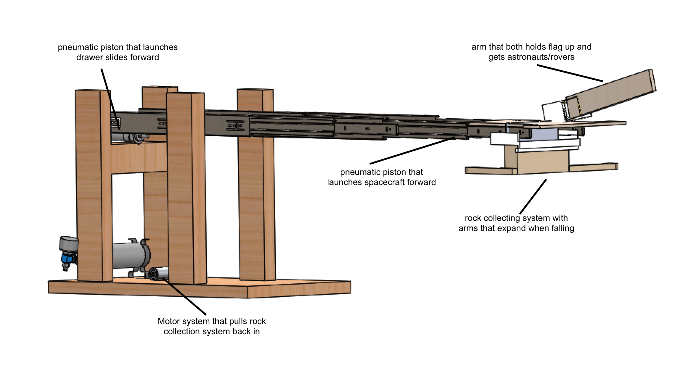
Evaluation Matrix:
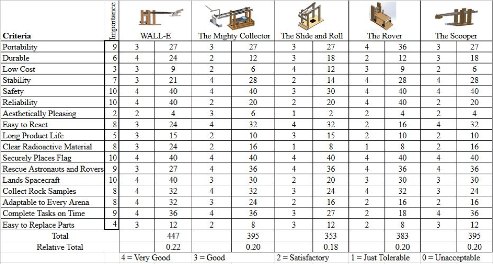
The evaluation matrix was created based on the most important customer and design requirements from the House of Quality. The ultimate goal was to get the most points in the competition while not sacrificing the integrity of the machine.
A detailed explanation of the Final Concept is seen in the video.
Sub-Assemblies
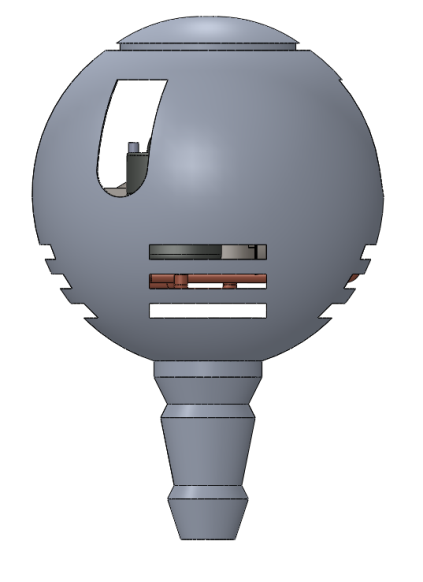
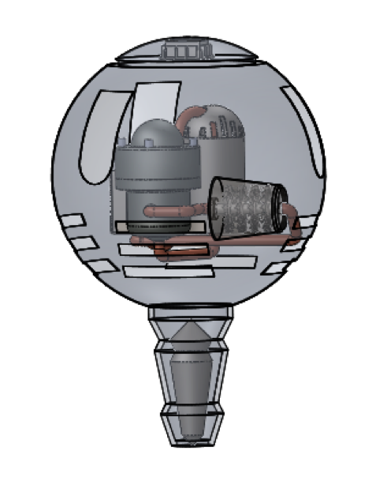
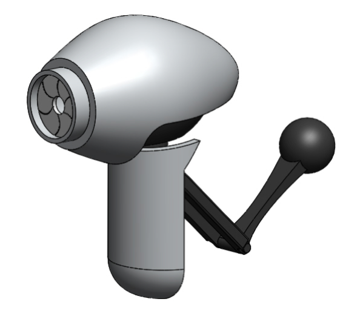
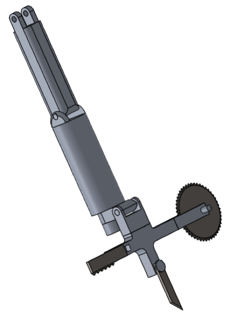
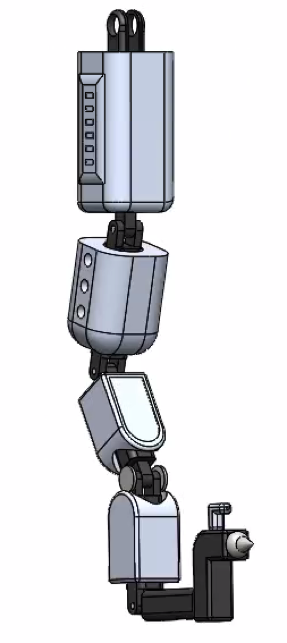
Left to Right: Shell, Inside Mechanics, Eye, Arm Concept 1, Arm Concept 2
Final Render
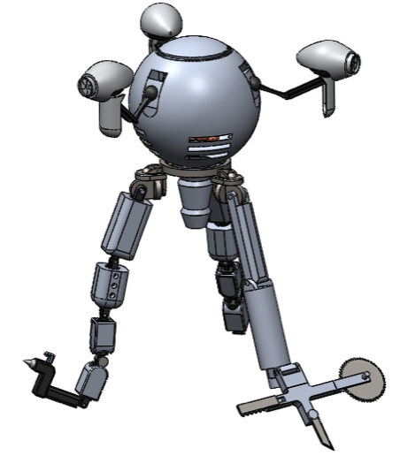
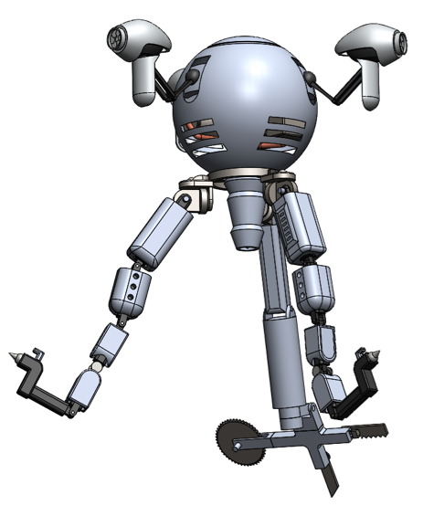
Animation